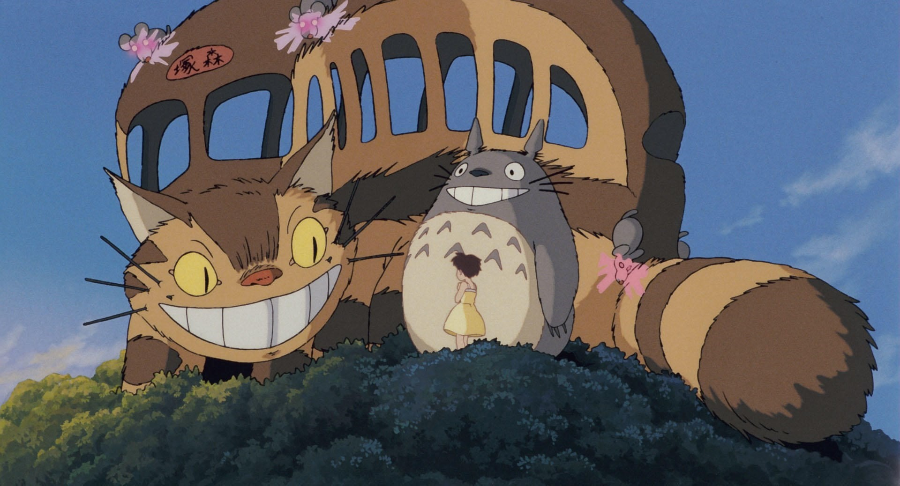
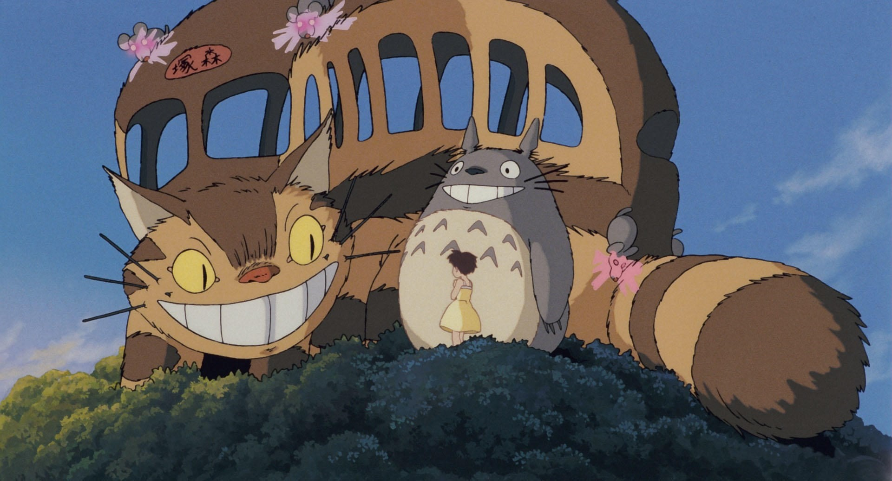
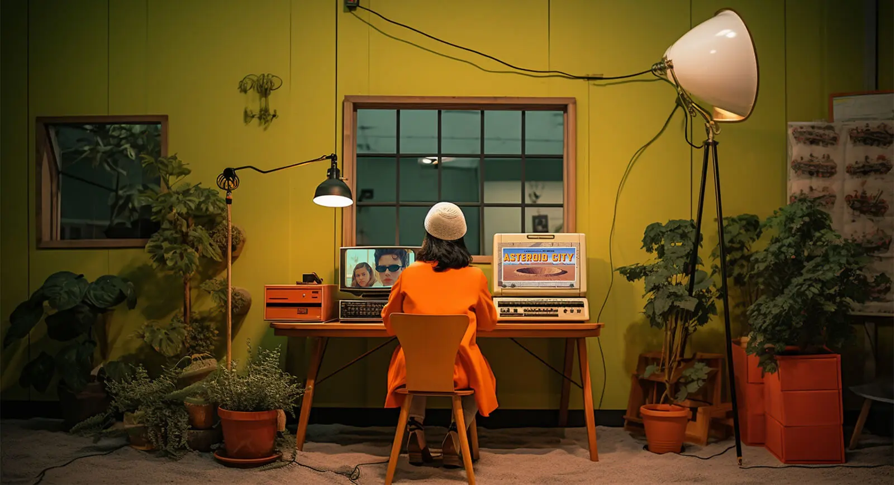
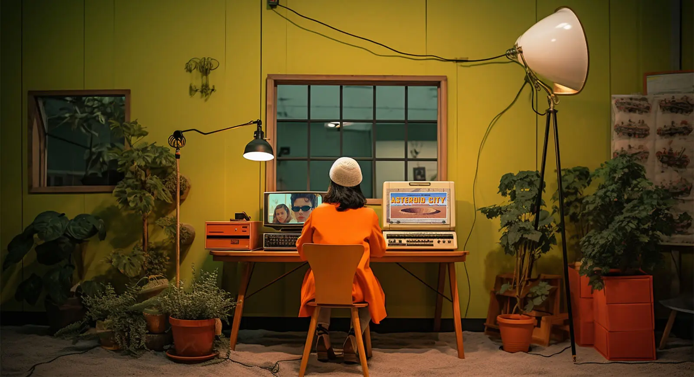

Visual Inspiration
Here, I am going to show some artworks that I feel very connected to and certain about. In this section, I am focusing on visual works that are not photography, such as illustrations and videography.
Mediums such as moving image are fascinating for me because of how they can change my thoughts and emotions. I love old video and old films for instance, because it takes me completely away from where I am and sets me down in a new world. For this reason, I am also a fan of surrealism. I have always wished that I could draw or illustrate well because of the world building possibilites. In my photography, I really aim to create a feeling of a different world. I like that I can make things seem a little different or uncanny and place someone in a world that they haven't seen, even for a few moments. I love when it happens to me, I can find it difficult to look away from my favourite artists that represent this skill, and I always aim to do so.
Illustrations are able to create from scratch, and if the feeling is right with what they create, it can be incredible. I take a huge amount of inspiration from the following art.
The first piece of work I would like to show is 'Destino'. This work was illustrated by Salvador Dali & Walt Disney, in collaboration together.
The 5 minute video can be viewed by clicking on This link
I like this work because of the feeling that it creates, alonside it's 'world-building' nature. I am in love with this work because of how far away it takes me. It is a beautiful example of a piece of work that makes you feel like you have entered the artists dimension. In this case, the music adds massively to the content for me.
The music that goes along with film is something that I take with me on my shoots. I will put the sountracks to films on my Spotify and walk around the streets taking pictures. I do this because the film used the music at an opportune moment, or in this case throughout, and those scenes made me feel inspired, and the feeling from the song carries over to the point of my own creation.
This illustration/short film has served as a strong source of inspiration for me for years now and I consistently get the same intense feeling of inspiration from it. I love showing it to other people for the first time, and it is one of my favourite pieces of art ever made.


Studio Ghibli
This film can be found at...
Studio Ghibli is impactful to my practice because of it's world-building aspect.
I am generally not somebody to watch anime, but Studio Ghibli has always stood out to me both visually and in its capability to create a completely new place. The amount of time and skill that goes into these films is shocking, and the results seem like something more than human.
I am interested in world building in a surrealist photographic landscape in my own work, but in this case it is illustration. In this case, I feel so much comfort looking into the worlds that are created. His work is so touching emotionally, it is complete escapism.
The world-building capabilities of illustrators and painters is difficult for me to comprehend as a photographer who puts a premium on this skill. Ghibli serves as something to constantly aspire to in terms of the feeling that it creates. in a world where I can use generative AI in video format, which I hope the future holds, I will be able to really express what he has given me through these films.
 

Wes Anderson
This film can be found at...
Wes Anderson is visually and compositionally my favourite filmmaker.
I am not as much of a film buff as I would like to be, so I may be ignorant to smaller filmmakers who possess similar talents, but Wes Anderson movies are the best examples of beautiful colour and compositional choices. I have cared about composition my whole life, and I have really taken an interest in colour over the course of this degree. I am also a retoucher by trade, and it is impossible for me to not have a huge affinity for the stills and the scenes that Anderson creates when I take these interests into account.
I have tried to include his compositional and colour-based skills into my own work by really studying the basics of these areas in photography. His work is an unimaginably important part of my own.
 

Francisco Goya
This film can be found at...